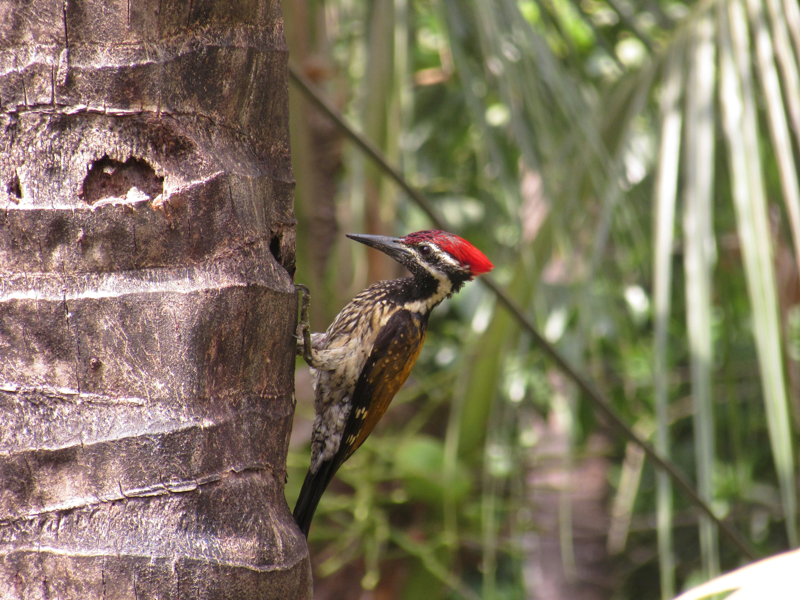

The Black-Rumped Flameback is a colourful woodpecker found across much of the Indian subcontinent. It has a bright golden-yellow back and wings, a black rump, and a striking red crest. It uses its powerful bill to hammer into tree trunks and branches in search of insects and their larvae. Its characteristic drumming and calls can reveal its presence even when it is hidden among foliage. The species occurs in forests, wooded areas, gardens, plantations, and urban environments with mature trees. Compared with the similar Indian Grey Hornbill, it is distinguished by the combination of features described above. Its preference for forests, woodland, plantations, gardens, orchards, and wooded urban areas also helps separate it from species that use different habitats. Its characteristic behaviour, including climbs tree trunks and branches while hammering into wood to locate insects; often drums on resonant surfaces, provides another useful field clue. Taken together, these differences make it easier to distinguish from similar species when the bird is seen clearly.